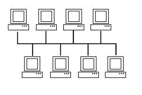
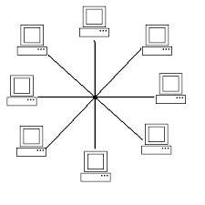
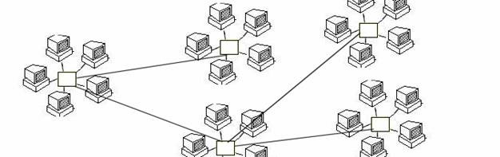
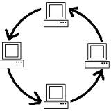

Počítačové siete
- Definícia počítačovej siete
- Je to systém vzájomne prepojených a spolupracujúcich počítačov, ktorý umožňuje efektívnu výmenu informácii medzi nimi
a zdieľanie hardverových a softvérových súčastí.
- Rozdelenie sietí
- Podľa druhov počítačov - homogénne (rovnaké OS), nehomogénne(rôzne OS)
Podľa rozlohy
WAN (globálne siete)
MAN (siete veľkých firiem - niekoľko budov až miest)
LAN (lokálne siete - sieť v rámci budovy až niekoľko budov)
PAN (personálne siete - sieť v rámci bytu, miestnosti)
Siete LAN
Z hľadiska ako sú údaje v sieti uložené a akú funkciu majú pracovné stanice v sieti delíme siete LAN na:
- Client to server - typickým predstaviteľom je sieť pracovných staníc UNIX sa serverom. Na serveri sú všetky aplikácie, dáta.
Na pracovnej stanici je len softvér na pripojenie sa ku serveru. V prípade výpadku pracovnej stanice, klient prejde na inú stanicu
a bez straty dát môže pokračovať v práci. V prípade výpadku servera sa stratia dáta všetkých užívateľov a navyše sieť prestane existovať.
Výhodou je zjednodušená administrácia takejto siete (každú aplikáciu stačí inštalovať 1krát, je dobre riešená bezpečnosť -vírusy)
Nevýhodou sú veľké nároky na server - musí stíhať obsluhovať všetkých užívateľov a musí byť odolný voči poruchám, čo určuje jeho veľkú cenu.
- Peer-to-peer - rovný s rovným. Typickým prestaviteľom je sieť poprepájaných PC s nejakým OS Win.
Počítače v takejto sieti sú približne rovnocenné, údaje si väčšinou každé PC ukladá u seba, tiež každá aplikácia
býva nainštalovaná na každom PC. Zložitejšia je administrácia.
(Len na upresnenie aj vo Win sieti môže byť server so špeciálnym Win sieťovým OS)
- Služby siete
- komunikácia - interaktívna (rozhovor), neinteraktívna(správy)
- zdieľanie - hardverých súčastí (diskov, tlačiarní, scanerov), aplikácii (sieťové aplikácie), pripojenia do iných sietí(internet)
- vzdialené zavádzanie OS
- diaľková správa PC
- Topológia siete
- Počítače v sieti môžu tvoriť rôznu štruktúru
- zbernica
- hviezda, strom
- kruh
- pavučina




- Technické prostriedky siete
- sieťová karta(LAN karta) - spája počítače pomocou kabeláže. Dnes už väčšina PC má vyvedený port na pripojenie do siete, niekedy však chceme aby bol PC pripojený na viacero sietí a musíme
sieťovú kartu dokúpiť (napríklad ak má PC robiť funkciu routra). Máme dve možnosti - interná karta (zabudovaná) a externá. Ak chceme zabudovanú LAN kartu
musíme mať v PC voľný slot PCI do ktorého takúto kartu vložíme. Ak taký voľný slot nemáme (napr. notebook) môžme zakúpiť externú ieťovú kartu, ktorá sa pripája
do USB portu počítača.
- wifi adaptér - podobne ako pri LAN karte
- aktívne prvky
- Koncentrátory - používa sa pri topológii hviezda ako centrálny prvok na ktorý sú PC pripojené
- HUB - jednoduché zariadenie, ktoré zachytí na jednom porte správu a pošle ju na ostatné porty
- Switch - podobne ako HUB, ale "časom" sa vie naučiť, ktoré PC je na ktorom porte a správu pre konkrétne PC počle len jemu
(switch môže mať na svojich portoch aj rôzne siete ale neslúži ako most medzi sieťami - PC z iných sieti naše PC nevidí)
- Router - (smerovač) oproti switchu môže robiť most medzi dvomi sieťami, na každom porte môže mať inú sieť
(pre každú sieť má na príslušnom porte pridelenú korektnú IP adresu),
vie robiť NAT (preklad adries z jednej siete do druhej), vie robiť DHCP server (pridelovať PC adresy z nejakého zoznamu dovolených adries),
vie hľadať pre odosielané pakety viaceré možné cesty, vie robiť fukciu firewallu. Často sa používa ako brána do internetu.
Úlohu routra môže plniť aj PC s viacerými sieťovkami s príslušným softvérom.
Router môže mať aj port wifi - sieť potom šíri cez tento port cez elektomagnetické vlnenie.
- Opakovače - vzdialenosť medzi dvoma aktívnymi prvkami siete nemožno neobmedzene zväčšovať. Zväčša po 200m treba pridať tkz. opakovač, ktorý
príme signál po jednom kábli a zosilnený pošle do pokračujúceho kábla (podobne funguje opakovač aj pre wifi routre)
- pasívne prvky - sem patrí hlavne kabeláž
metalické káble - patria medzi najviac používané, pre svoju cenu a jednoduchosť motáže.
- UTP - netienená krútená dvojlinka (v skutočnosti je tých káblov viac). Koncovka netienená RJ45.
- STP - tienená krútená dvojlinka, ako UTP ale tienením je možné použiť aj do elektro-mag. znečisteného prostredia, prípadne na väčšie vzdialenosti
Optické káble - umožňujú väčšie prenosové rýchlosti, nevadí im elektromagnetický smog. Optika sa používa napríklad medzi uzlami siete internetu.
- Vytvárame sieť
- zvolíme si technické prostriedky - pre lokálnu sieť prakticky pripadá do úvahy len topológia hviezda/strom, kde ako prepínač použijeme switch alebo router
Router môže zabezpečovať zdielanie pripojenia na internet a tiež môže pridelovať IP adresy počítačom, ktoré sa do siete budú hlásiť.
(adresy môže pridelovať dynamicky i staticky)
Ako spojovací kábel sa dnes výhradne používa krútená dvojlinka (na menšie vzdialenosti obyčajne postačuje netienená) alebo wifi signál
Samozrejmosťou sú sieťové karty v každom PC, ktorý sa má pripájať do siete a tiež sieťový operačný systém.
- Adresa
Aby sa počítače mohli v sieti rozprávať, musia sa rozlišovať - musia mať adresu. V protokole IP sa počítače medzi sebou oslovujú číslami - adresami.
Každý počítač v našej sieti musí mať jedinečnú adresu. IP adresa sa skladá zo štvorice čísel medzi ktorými sú ako
oddelovače bodky. V našej školskej sieti majú počítače čísla 192.168.0.1 alebo 192.168.3.254. Každé číslo môže nadobúdať
hodnoty 0 až 255, len posledné číslo nemôže byť 0 a ani 255. Pridelovanie čísla je prakticky ľubovoľné, ale ak máme
sieť pripojenú na internet a chceme aby počítať bol "zvonku" viditeľný, mal by mať korektnú adresu - to znamená
pridelenú providerom - a nie len nami/routrom vymyslenú.
Maska
Okrem IP adresy ešte treba zadať masku siete. Maska siete nám určuje akú veľkú sieť máme (ktoré čísla sú pre všetky
počítače rovnaké). My máme masku 255.255.252.0, čo znamená, že prvé dve čísla v IP adrese tejto siete sú pre všetky
počítače tejto siete rovnaké a tretie má rovnaké bity 1 až 6. Premenlivé sú teda len bity 7-8 tretieho čísla a 8 bitov štvrtého čísla.
Celkovo v našej sieti sa teda môže meniť posledných 10 bitov, čo určuje pre našu sieť rádovo 1000 počítačov.
Ak by sme dali masku 255.255.0.0 mohli by sa meniť tretie i štvrté číslo adresy.
DHCP, BOOTP
Pokiaľ máme v sieti DHCP server (môže byť nainštalovaný napr. na UNIX serveri, Win2000 serveri alebo ho robí router) zvolíme voľbu,
že adresu i masku počítaču pridelí tento server (pri nejakej poruche DHCP servera však celá sieť prestane úplne fungovať).
DHCP okrem IP adresy môže počítaču pridelovať aj masku siete, bránu a adresu DNS servera.
- Otázky
- čo je počítačová sieť
- aké výhody prináša počítačová sieť
- aké nevýhody/úskalia prináša počítačová sieť
- ako delíme sieťe podľa rozlohy
- ako delíme sieťe podľa rozloženia údajov v sieti
- Akú úlohu majú v sieti koncentrátory
- Akú úlohu majú v sieti opakovače
- Aký je rozdiel medzi routrom a switchom
- Čo je to topológia siete, aké sú základné používané topológie
- Akú štruktúru má IP adresa
- Načo slúži maska siete
- Akú fukciu má v sieti DHCP server
- Koĺko približne PC može byť v sieti ak je maska 255.255.248.0, 255.255.255.128